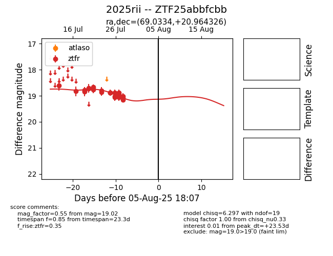

Target 2025rii at 2025-08-05 18:07, see:
FINK: fink-portal.org/2025rii
Lasair: lasair-ztf.lsst.ac.uk/objects/2025rii
ALeRCE: alerce.online/object/2025rii
TNS: wis-tns.org/object/2025rii
YSE: ziggy.ucolick.org/yse/transient_detail/2025rii
alt names
ZTF25abbfcbb (ztf,fink)
2025rii (tns,yse)
coordinates:
equatorial (ra, dec) = (69.0334,+20.96433)
galactic (l, b) = (177.3279,-17.42709)
photometry
last ztfr=19.02
24 ztfr detections
